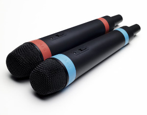

Microphones
The choice of microphones is essential to spoken dialogue systems. The built-in speakers of a laptop can work, but it is not a very good option. The use of a headset is advised.
Singstar microphones

For allowing two people to interact with the system, the Singstar microphones (wired or wireless) for Playstation is a very affordable option. They are also good at not picking up background noise.
This is how you set them up:
- Plug in the microphones (USB) and wait until windows have detected them.
- Right-click on the speaker icon in the bottom right corner of the screen and choose "Recording devices".
- Make sure the "USBMIC" or "Wireless Mic" is selected as default (green symbol). You should see the level bars move when you speak in the microphones.
- Select the Microphone and choose Properties.
- Open the "Levels" tab and adjust it properly (watch the level meters). For Windows 7, this should be fairly low, for Windows 8 fairly high.
- Open the "Advanced" tab and set the format to 2 channels, DVD quality. This is important in order to get stereo input.
- Close all sound control windows by pressing OK.
When using the microphones in IrisTK, the person on the left should have the red microphone and the person on the right the blue microphone.